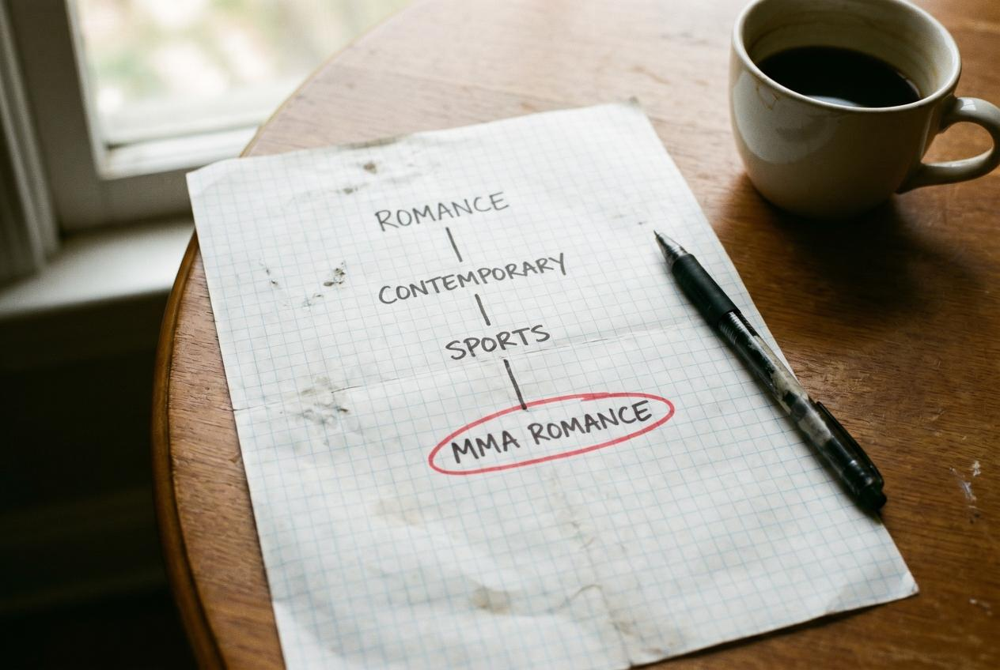

Pick the wrong Amazon categories at launch and your book is invisible. Pick the right ones and 50 sales make you a "#1 New Release" with a badge that drives every future click for months.
This is the highest-leverage 30-minute task in self-publishing — and 80% of indie authors get it wrong. They pick the obvious top-level category ("Romance > Contemporary") where the bestseller threshold is 2,000+ sales/week, sit at rank 145,892, and never appear on a category list at all.
This article is the right way to pick KDP categories in 2026, the free tools that work, what to do if you've already launched with bad picks (you can change them anytime), and the niche-finding patterns that produce bestseller badges with realistic launch numbers.
Why Categories Matter More Than Most Authors Realize
Amazon assigns each book to up to 3 categories (you can request more — we'll get to that). Each category has its own bestseller list. Your book's rank within each category is calculated separately from your overall Amazon rank.
The math that makes categories so important:
- Top-level category ("Romance"): bestseller list updates require ~5,000 sales/week. Your indie launch hits #347 if you're lucky.
- Niche category ("Romance > Contemporary > Sports"): bestseller list updates require 30–80 sales/week. Your indie launch hits #1.
The "#1 Bestseller" or "#1 New Release" orange badge that appears on your Amazon product page comes from the smallest category you rank #1 in, not from your overall rank. That badge:
- Drives 8–15% higher click-through on every future search
- Generates social-proof you can quote ("#1 Amazon Bestseller in Sports Romance")
- Triggers Amazon's also-bought algorithm to feature your book in related-book carousels
- Lasts as long as you stay #1 in that category — sometimes weeks
A book that hits #1 in a niche category at launch with 50 sales has a structurally different trajectory than a book that hits #14,000 overall with the same 50 sales. Same sales velocity, completely different downstream visibility.
The Free Way to Find Niche Categories (Browse Method)

You don't need a paid tool to start. Amazon's category tree is fully browsable:
- Go to Amazon → Books → Kindle eBooks
- Click into the genre you're publishing in (Romance, Mystery, Sci-Fi, etc.)
- Drill down through the category tree on the left sidebar
- For each subcategory you're considering, click the "Top 100" tab for that category and look at the #100 book
- Check the #100 book's overall sales rank ("#23,456 Paid in Kindle Store" — that's their overall rank)
The lower the overall rank of the #100 book in a category, the easier it is to break into the top 100 of that category. A category where the #100 book has rank 80,000 means you only need to outsell rank 80,000 to land on the bestseller list. A category where #100 has rank 5,000 is nearly impossible for an indie.
Target categories where the #100 book has overall rank above 50,000. Those are your accessible niches.
The Paid Way (Faster but Costs $97/year)
Publisher Rocket by Dave Chesson at Kindlepreneur is the standard tool. Costs $97 one-time (lifetime license, not annual). It pulls live Amazon data and shows you:
- Sales estimates for any category at any rank
- Bestseller threshold per category (sales/day to hit #1)
- Recommended categories based on keyword + comp-title research
- Keyword volume and competition for KDP backend
- Amazon Ads keyword opportunity finder
For most indie authors, the time saved (and the better category picks) pay back the $97 in the first launch.
The Hidden Categories Trick
Here's what most articles don't tell you: Amazon has thousands of categories that don't appear in the "select category" dropdown when you're publishing on KDP.
These hidden categories are typically much more niche, have fewer competitor books, and are easier to rank in. The catch: you can't pick them through the standard KDP setup — you have to request them via KDP Customer Support after publishing.
How to find hidden categories
- Go to your Amazon Kindle Store category browse
- Drill into deep niche categories you'd never see on the KDP dropdown
- Note the exact category name and "breadcrumb path" (e.g., "Kindle Store > Kindle eBooks > Romance > Multicultural & Interracial > African American")
- Some of these will be "hidden" — meaning available via support request only
How to request hidden categories
After your book is live on KDP:
- Go to KDP → Help → Contact Us → Categories
- Submit request: "Please add my book ASIN [B0XXXX] to these additional categories: [list with full breadcrumb paths]"
- KDP support typically processes within 48–72 hours
- You can request up to 10 categories total (3 standard + 7 via support)
This is huge. A book in 10 categories has 10 chances to hit #1 — and the niche categories you can request via support are often the easiest to rank in.
The Pattern: What Categories Indie Bestsellers Actually Use
Looking at indie books that consistently hit category bestseller lists in 2026, the pattern is:
Romance authors stack:
- One mid-tier category (Romance > Contemporary)
- Two trope-specific niches (Romance > Western, Romance > Sports, Romance > Office, etc.)
- Several hidden niches via support (Multicultural Romance, Holiday Romance, Inspirational Romance)
Thriller / Mystery authors stack:
- One mid-tier (Mystery, Thriller & Suspense)
- Two sub-genre niches (Domestic Thriller, Cozy Mystery, Police Procedural)
- Several hidden niches via support (Christian Mystery, Women Sleuths, Hard-Boiled Mystery)
Non-fiction authors stack:
- One mid-tier (Self-Help)
- Two specific-application niches (Business > Time Management, Self-Help > Habits, etc.)
- Several hidden niches via support (Christian Self-Help, Career Development for Women, etc.)
Sci-Fi / Fantasy authors stack:
- One mid-tier (Science Fiction, Fantasy)
- Two sub-genre niches (Space Opera, Dystopian, Urban Fantasy, LitRPG)
- Several hidden niches via support (Hard SF, Cyberpunk, Steampunk Romance, etc.)
The rule: stack one mid-tier category for credibility, then 6–9 narrow niches for actual ranking. The niches do the work.
Categories vs Keywords (Don't Confuse Them)
Categories = the bestseller list buckets your book competes in. Keywords = the 7 search terms (KDP backend field) that determine which Amazon search results show your book.
Both matter. Both are findable with the same tools (Publisher Rocket or manual research). Keywords are typically lower-leverage for indie authors because Amazon's algorithm increasingly leans on category placement and click-through-rate signals. But you should still optimize:
Keyword research that actually works
Open Amazon search bar. Start typing the genre + a hook word ("small town romance...", "psychological thriller...", "self-help for ADHD..."). Amazon's autocomplete shows you what real readers are searching for. Those are your keywords.
Pick 7 keyword phrases (Amazon allows up to 50 characters per phrase, 7 phrases) where:
- Each phrase has visible Amazon autocomplete (proves real search demand)
- Competition is low to medium (you can rank for it)
- The phrases describe what your book is about (not just adjacent topics)
Update via KDP backend → KDP Bookshelf → "..." menu → "Edit eBook Details" → Keywords field. Changes take effect immediately.
What to Do if You Already Launched With Bad Categories
You can change categories at any time. Here's the recovery sequence:
- Audit current categories in KDP. What categories is your book listed in right now?
- Research better picks using Publisher Rocket OR the free browse method
- Update via KDP for your three primary slots
- Submit support ticket asking for 7 additional hidden niche categories
- Wait 48-72 hours for support to process additions
- Push a small wave of sales (10-20 over 24 hours via your email list, ARC re-engagement, or a small Amazon ad spend) — this re-triggers Amazon's algorithmic re-evaluation of your book's category placement
Books that were buried in obvious top-level categories often jump to #1 in niche categories within 7 days of an optimization pass. The speed of the turnaround is the surprise.
Common Category Mistakes
The mistakes that kill discovery:
Mistake 1: Picking only top-level categories
"Romance > Contemporary" alone. Almost impossible to rank. Always pair with at least 2 niche categories.
Mistake 2: Picking categories your book doesn't actually fit
Amazon flags mismatched categories. If you publish a YA fantasy and put it in "Adult Erotica" hoping for less competition, Amazon strips the placement and may flag your account. Categories must match the book's actual content.
Mistake 3: Forgetting to use the support request for hidden categories
Authors who only use the 3 standard KDP slots cap their bestseller-list opportunities at 3. Authors who add 7 more via support get 10 chances.
Mistake 4: Not re-evaluating categories after launch
Categories that were good at launch may not be the best ones in 6 months — Amazon adds new sub-categories regularly. Re-audit every 6 months.
Mistake 5: Confusing categories with keywords
Some authors put keyword phrases in the category field or category names in the keyword field. They're separate systems. Master both.
The Compounding Effect
Categories don't work alone. They compound with everything else:
- Better categories → easier to hit category bestseller list
- Bestseller list → orange badge on Amazon page
- Orange badge → 8-15% higher click-through on every search result
- Higher CTR → Amazon's algorithm pushes the book into more recommendation slots
- More slots → more sales
- More sales → reinforces category ranking
This is why category optimization is the highest-leverage 30-minute task for indie authors. The same sales effort produces dramatically different ranking outcomes depending on what categories you've selected.
Pair category optimization with real magazine press to drive launch-week traffic and you compound the effect. VUGA's Spark package ($997) drives 10 placements + traffic during the critical launch window when category rankings are most algorithmically responsive. Bestseller package ($7,997) adds three guaranteed celebrity-magazine features that drive serious launch-week sales — exactly when category bestseller status is being decided.
Bottom Line
Categories are the most-overlooked, highest-leverage task in self-publishing. Pick the right niche categories at launch and 50 sales = #1 New Release with all the algorithmic benefits that follow. Pick obvious categories and 5,000 sales still don't get you on a list.
Use the free browse method to identify niche categories. Use Publisher Rocket if you can spare the $97 for faster, more accurate research. Always submit a support ticket for hidden categories after publishing. Re-evaluate every 6 months.
Combine this with real magazine press at launch — driving traffic + click-through into your book during the algorithmic evaluation window — and the compounding effect produces dramatically better ranking than either tactic alone.
See VUGA author packages — Trial $97, Spark $997, Bestseller $7,997, Authority $14,997. Press at launch + niche category optimization = how indie books actually become category bestsellers.
Sources for this article:
- Kindlepreneur, "How to Choose the Best Kindle eBook KDP Category"
- Publisher Rocket, Tool Documentation
- TCK Publishing, "100 Most Competitive Amazon Kindle Bestseller Categories"
- Reedsy, "KDP Categories Guide"
- BookBaby, "Amazon Categories Optimization"
Image generation prompts (Gemini Nano Banana Pro)
Hero image (1600×900, JPG):
An overhead editorial photograph of a bookshelf where one book is highlighted with a glowing orange "#1 BESTSELLER" badge, while surrounding books fade into shadow. The badge clearly visible. Warm afternoon light. Color palette: warm wood, cream paper, vibrant orange accent for the badge. Editorial product photography. --ar 16:9 --style raw
Inline image 1 — category tree (1200×800):
A clean photograph of a hand-drawn category tree on graph paper — branching structure with "ROMANCE" at the top, narrowing through "CONTEMPORARY" to "SPORTS" to "MMA ROMANCE" with the deepest leaf circled in red marker. A pen, a coffee cup. Editorial design photography. --ar 3:2
Inline image 2 — bestseller badge close-up (1080×1080):
A close-up macro photograph of an Amazon-style "#1 NEW RELEASE" orange badge embossed on a paper label. Slight texture on the paper. Soft directional lighting. Editorial product photography. --ar 1:1